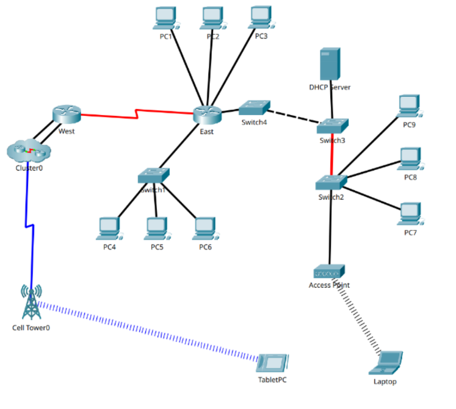
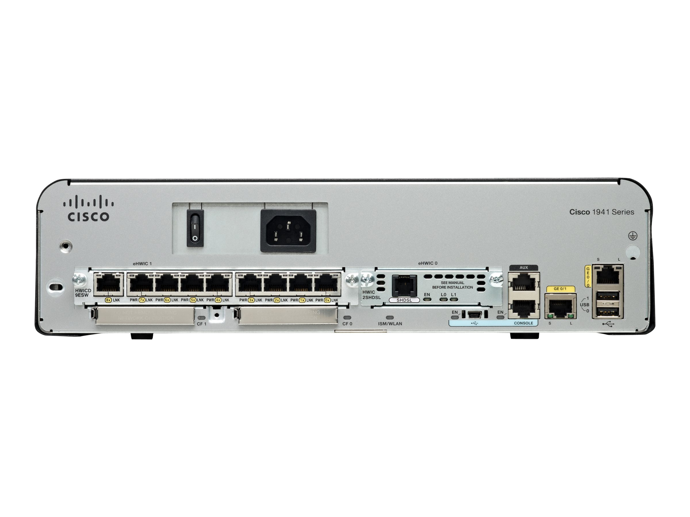
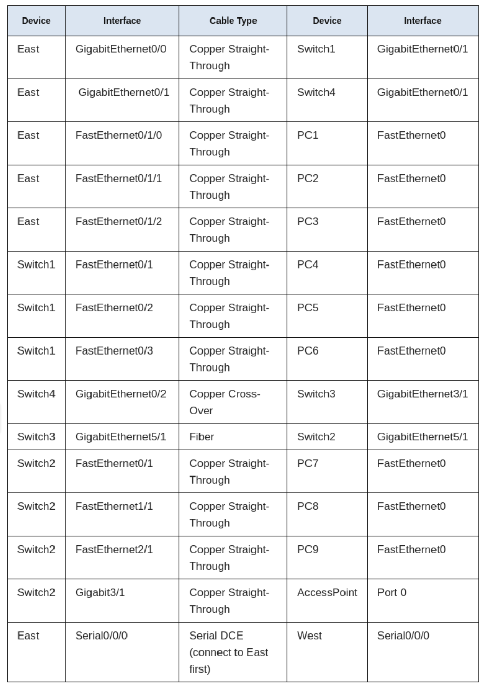
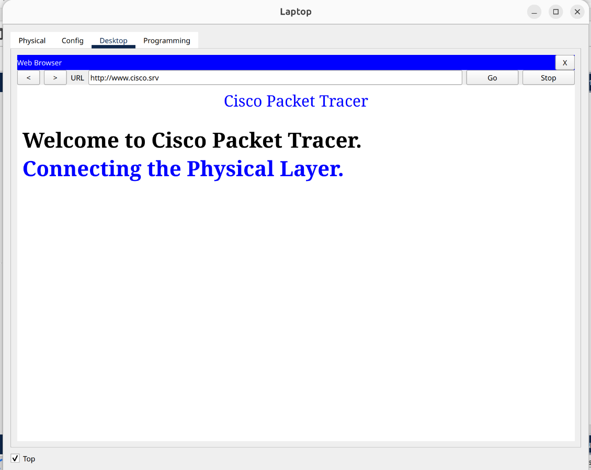
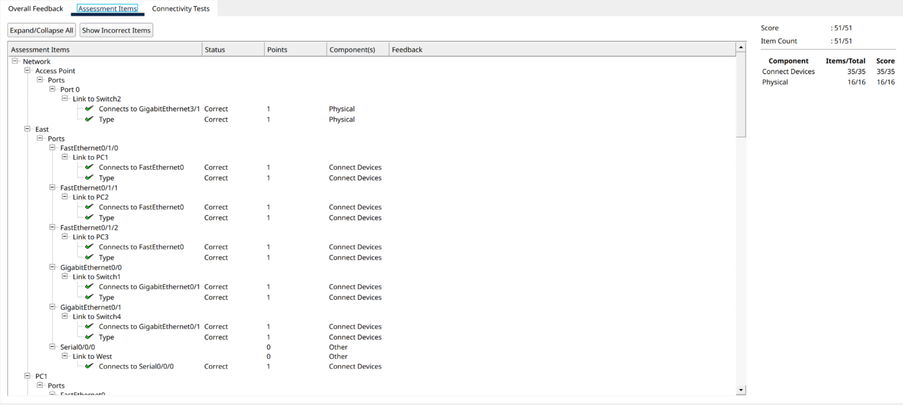

Lab 9. Packet Tracer - Connect the Physical Layer

By An Le
In Lab 9 - Connct the Physical Layer, we will explore different option on how to connect on internetworking devices. We also determine which option to use when connecting multiple devices.
Part 1: Identify Physical Characteristics of Internetworking Devices
Step 1 - Identify the management ports of a Cisco router

Follow the instruction, there should be an image of the Cisco router to identify the port. The zoom in function is quite limited but with the name of the router "Cisco 1941 Series", we can see that the ports available are AUX and Console Ports.
Step 2 - Identify the LAN and WAN interfaces of a Cisco router
Next step, follow the instruction to identify the interfaces using command show ip interface
brief, we can identify a total of 4 with 2 Serial and 2 Gigabit Ethernet; With the
default bandwidth of GigabitEthernet 0/0 is 100000 Kbit and Serial 0/0/0 is 1544 Kbit.
Step 3 - Identify module expansion slots
Using the physical tab, we can identify the number of the expansion slots on the router and the switch. In this case, 1 for the East Router and 5 for the Switch 2.
Part 2: Select Correct Modules for Connectivity
Step 1 - Determine which modules provide the required connectivity
On the physical tab, on the right side of the router image, there is a list of modules that can be installed to the router. Examine each of the option available, we can see that the HWIC-4ESW can provide four swiching ports to connect up to 4 hosts, which is what we need to connect to the 3 PCs. Follow the same process, we can identify the module to provide Gigabit optical connection is PT-SWITCH-NM-1FGE.
Step 2 - Add the correct modules and power up devices
By select and drag the modules to the empty slot on the physical tab, we can install a new module for our
need (but we have to turn it off first). After that, we can turn it on again and verify that the installed
module show up correctly with show ip interface brief. Follow the same procedure on the switch 2,
we can see that a new GigabitEthernet5/1 show up.
Part 3: Connect Devices
In this step, it is prettly straight forward. By consulting the provided chart, we can quickly select the connect the correct cables, ports and devices.

Part 4: Check Connectivity
Step 1 - Check the interfaces status on East
If we follow all the step correctly, the result should be matching with what was provided.
Interface IP-Address OK? Method Status Protocol
GigabitEthernet0/0 172.30.1.1 YES manual up up
GigabitEthernet0/1 172.31.1.1 YES manual up up
Serial0/0/0 10.10.10.1 YES manual up up
Serial0/0/1 unassigned YES unset down down
FastEthernet0/1/0 unassigned YES unset up up
FastEthernet0/1/1 unassigned YES unset up up
FastEthernet0/1/2 unassigned YES unset up up
FastEthernet0/1/3 unassigned YES unset up down
Vlan1 172.29.1.1 YES manual up upStep 2 - Conncect the wireless devices, Laptop and TablitPC
Going to the config tab on the Laptop, change the wireless status to On and go to the web browser. Follow the same step with TabletPC, if all is correct, we should be able to connect to www.cisco.srv and the following page should show up

Step 3 - Change the access method of the TabletPC
To change access method on TabletPC, un-check wireless status, change to 3G/4G Cell1 interfaces, and check the status to On. The result should be identical to accessing the access point and allow us to connect to the Cisco website, with only different is that the connection is going though cell tower.
Step 4 - Check connectivity of other PCs
We can go though the PC and check the conncetion, but if all is correct, it we should be able to visit the website and ping each other.This lab is prettly straigh forward, follow the instruction and setting should get everything done pretty quickly. The only obstacle is probably the image and zoom function on the physical tab.
